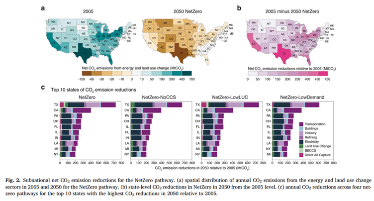

Decision-makers working on strategies to achieve the US net-zero emission goal need to have a broader understanding of the economic and sustainability impacts.
In a new paper published in Energy and Climate Change journal, international team of researchers from X, Y, and Z used an integrated assessment model to investigate four approaches to achieving the U.S. net-zero emission goal and analyzed their impacts on energy, water, land, and public health within each state. “This research serves as a foundation for gaining a deeper understanding of the effects of the U.S. net-zero emission goal and aims to lead this goal towards cost-effective and environmentally sustainable change,” said Haewon McJeon, visiting professor at KAIST Graduate School of Green Growth & Sustainability.

This study utilizes GCAM v6.0 USA version, focusing on modeling various elements of the U.S., including its economy, energy system, agriculture, land use, water, and more, at the state level. The model incorporates consistent assumptions regarding population and economic growth and includes estimates for past and future greenhouse gas emissions and air pollutant levels. The research presents four distinct pathways to achieve net-zero emissions in the U.S. These pathways include the existing net-zero pathway, along with three additional alternative net-zero pathways designed to account for uncertainties in low-carbon technologies, carbon removal methods, and carbon reduction. GCAM-USA takes into account price adjustment for non-CO2 greenhouse gases, as well as considers the impact of technology lifespan tracking and mortality rates related to particulate matter exposure.
The findings of this study suggest that the net-zero emissions pathway requires a significant reduction in greenhouse gas (GHG) emissions by 2050. The electricity and transportation sectors play a pivotal role, and achieving this goal necessitates a combination of fundamental GHG emissions reductions and the implementation of carbon dioxide removal technologies (CDR). The successful execution of carbon removal technologies depends on technology, economic viability, public approval, and regulatory support. Regionally within the United States, several states play a critical role in GHG emissions reduction, with states such as Texas, California, and Florida being among the significant contributors. These states account for a substantial portion of the national GHG reduction, with much of the emphasis on GHG reductions primarily within the electricity sector.
Carbon removal technologies are distributed differently among states, with Texas, for instance, having a larger carbon capture capacity due to factors like its geological terrain. Nevertheless, substantial investments and policy support are required to achieve large-scale carbon capture. Clean energy investments also hold a vital role in accomplishing carbon reductions, with expanding renewable energy capacity and reducing fossil fuel capacity being crucial focal points. Additionally, the U.S. net-zero pathway offers environmental benefits, including positive impacts on demand reduction, air quality, and land use. Sustainability outcomes in the net-zero pathway can vary depending on the specific trajectory, with diverse co-benefits and trade-offs observed on a state-by-state basis.
This study provides a comprehensive analysis to evaluate the US net-zero emission goals and to understand state-level actions and interactions. It considers various net-zero pathways while accounting for uncertainties such as low-carbon technologies, carbon management strategies, policies, behavioral changes, and more. The research results illustrate that these different pathways may have varying economic and sustainability impacts in each state, emphasizing the importance of considering this diversity of impacts. It also highlights that not accounting for these various effects can be problematic. Furthermore, in addition to the climate mitigation benefits, the study identifies environmental benefits, such as water conservation and air quality improvements.
However, it acknowledges that in some states, there may be discrepancies between mitigation costs and benefits, which can vary depending on the burden-sharing approach. The study also explores burden-sharing approaches, demonstrating varying outcomes on a state-by-state basis and underscoring the importance of state and federal cooperation for the United States to achieve its net-zero goals. The research also highlights the need for capital investments in the net-zero transition and underscores the critical role of policies and regulations.
Korea also has a 2050 carbon neutrality goal. The lessons learned from this research can also be expanded to better understanding the economically sustainable transition towards achieving net-zero emissions in Korea. An in-depth research is needed for the comprehensive assessment of Korea’s net-zero transitions.
https://doi.org/10.1016/j.oneear.2023.08.019
한국어 요약
미국의 탄소중립 배출량 목표가 주별 에너지, 수자원, 토지, 건강에 미치는 영향 평가
2021년 유엔 기후 회의에서 미국은 온실 가스 배출을 2005년 대비 50-52% 감축하고, 2050년까지 탄소중립을 달성하기로 기후 공약을 발표했다. 더불어 미국은 2035년까지 100% 탄소 오염이 없는 전기를 사용하는 것을 목표로 하고 있다. 이런 미국의 기후 목표가 탄소 배출 감축과 토지 이용, 자본 움직임 및 재정, 고용, 대기오염 관련 건강에 복합적으로 영향을 미쳐 경제적 및 지속 가능한 변화에 영향을 미칠 것으로 예상된다.
카이스트 녹색성장지속가능대학원 전해원 방문교수를 포함한 한국과 중국 등의 국제 연구진은 통합평가모델을 사용하여 미국의 탄소중립 달성을 위한 네 가지 접근 방식을 탐구하고 해당 주에서의 에너지, 물, 토지, 공중보건에 미치는 영향을 분석한 논문을 Energy and Climate Change 저널에 출간하였다.
통합평가모델을 활용한 이번 연구는 미국의 탄소중립목표의 영향을 보다 심층적으로 이해하기 위한 기초를 마련하며, 해당 목표로의 비용 효율적이고 환경적으로 지속 가능한 전환을 촉진하려는 목적을 가지고 있다는 점에서 큰 의미가 있다. 이 연구는 한국의 ’2050년 탄소중립’이라는 기후 목표가 미치는 영향에 대한 심도 있는 분석의 필요성을 시사한다.